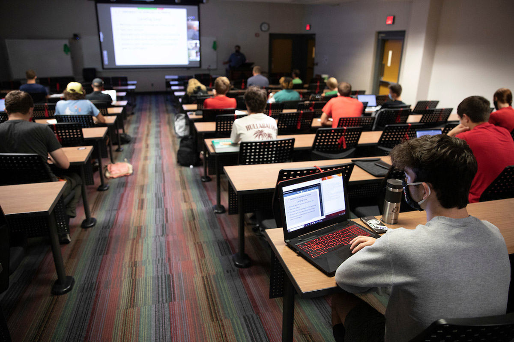

Course Overview
ISQA3900-850 focuses on contemporary techniques and technologies in the design, development, and integration of web-enabled information systems.
Key topics we are covering include:
- Manage change in the context of distributed systems web development & maintenance
- Develop a working knowledge of developing and managing code as a team using technologies like Git and GitHub
- Create Internet-based, distributed systems.
- Conduct analysis, design, and implementation using an object-oriented paradigm.
What I find most interesting about this course is learning and practicing modern software engineering methods in conjunction with Agile and Scrum in the development of a team web development project.